Elastic Stack은 자체적인 클러스터 모니터링 기능을 가지고 있습니다. 기본적인 설정법은 공식 도큐먼트에 자세히 나와 있습니다.
모니터링 활성
6.2 이하 버전은 X-Pack 플러그인을 설치해야 하며, 6.3 버전 부터는 기본 다운로드 패키지에 포함이 되어 있습니다. 모니터링 기능은 Basic 라이센스 이기 때문에 유료 라이센스 없이 Kibana 의 모니터링 메뉴에 가서 Turn on monitoring 버튼을 클릭하기만 하면 모니터링 기능이 활성화 됩니다.
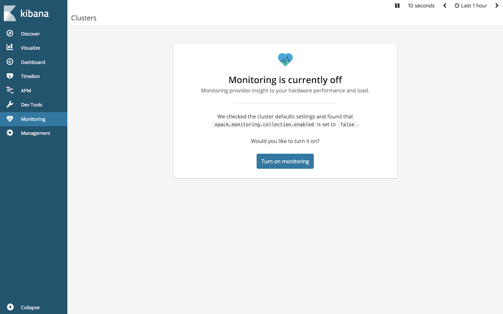
Basic 라이센스는 1개의 클러스터만 모니터링 가능하며 보관 주기는 최대 1주일까지만 가능합니다. Gold 이상의 라이센스는 다중 클러스터 및 보관 주기도 자유롭게 설정 가능합니다.
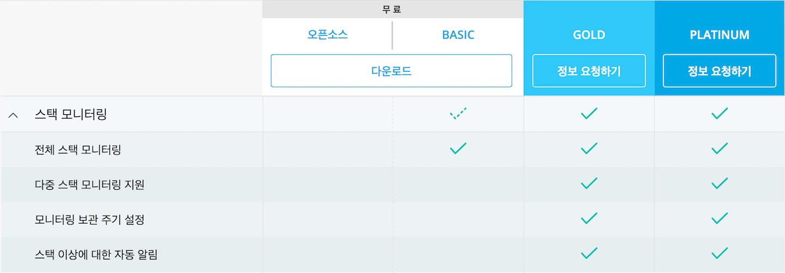
Logstash, Beats 모니터링 설정
위와 같이 Kibana에서 모니터링을 활성화 하면 기본적으로 Elasticsearch, Kibana는 자동으로 설정이 끝납니다. 이전 버전에서 롤링 업그레이드를 했거나 해서 설정이 잘 되지 않은 경우는 elasticsearch.yml 파일에 아래 내용을 추가하고 노드를 재시작하면 모니터링이 실행됩니다.
- elasticsearch.yml
xpack.monitoring.enabled: true
xpack.monitoring.collection.enabled: true
Beats와 Logstash의 경우는 logstash.yml, ~beat.yml 파일에서 아래와 같이 설정을 해 주어야 합니다.
logstash.yml
xpack.monitoring.elasticsearch.url: ["<es_host>:9200"]
xpack.monitoring.elasticsearch.username: "logstash_system"
xpack.monitoring.elasticsearch.password: "<logstash_system password>"~beat.yml
output.elasticsearch:
hosts: ["<es_host>:9200"]
username: "<user>"
password: "<password>"
xpack.monitoring.enabled: true
위와 같이 설정한 뒤 재시작하고 나면 모든 스택의 제품들이 모니터링 화면에 나타납니다.
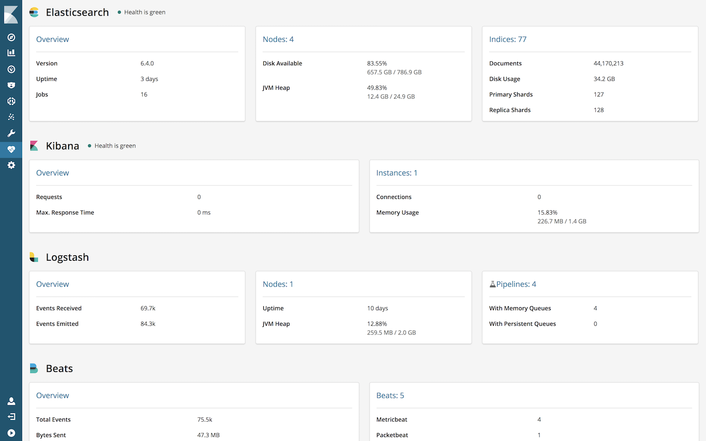
참고로 모니터링 데이터의 기본 보관 기간은 1주일 입니다. 이 설정은 elasticsearch.yml의 다음 설정으로 변경이 가능합니다.xpack.monitoring.history.duration: "30d"
원격 모니터링 설정
기본적으로 모니터링 데이터는 .monitoring-es-6-2018.09.08 형식의 인덱스로 모니터링중인 해당 클러스터에 저장됩니다. 하지만 저장 주기가 길어지면 모니터링 데이터의 양도 많아지고, 운영 클러스터가 다운되었을 때 모니터링 데이터도 함께 유실될 수 있습니다. Elastic Stack은 모니터링 데이터를 운영 클러스터가 아닌 별도의 클러스터에 저장하도록 설정이 가능합니다.
설정은 운영 클러스터의 elasticsearch.yml 파일만 해 주면 kibana, logstash, beats들의 모니터링 정보도 함께 원격 클러스터에 저장됩니다. elasticsearch.yml 파일에 아래 내용을 추가합니다.
xpack.monitoring.exporters: |
remote-cluster 부분에는 내가 설정하는 임의의 구분자명를 입력하면 됩니다.
만약에 운영 클러스터와 원격 모니터링 클러스터에 모니터링 데이터를 모두 저장하고 싶으면 아래와 같이 type: local 값을 설정하면 됩니다.xpack.monitoring.exporters:
local:
type: local
remote-cluster:
type: http
host: ["<monitoring_cluster_host>:9200"]
auth:
username: "<user>"
password: "<password>"
Elastic Cloud로 전용 모니터링 클러스터 사용
Elastic 사에서는 SaaS 형태의 Elastic Cluster 클라우드 서비스를 운영하고 있습니다. 클라우드 서비스는 https://cloud.elastic.co 에 접속해서 사용 가능합니다. 처음 계정을 만들면 14일간 무료로 사용이 가능하며 X-Pack Gold, Platinum 기능들의 사용이 가능합니다. 관리 화면에서 간편하게 버튼을 클릭해서 elasticsearch 노드들과 kibana의 실행이 가능합니다.
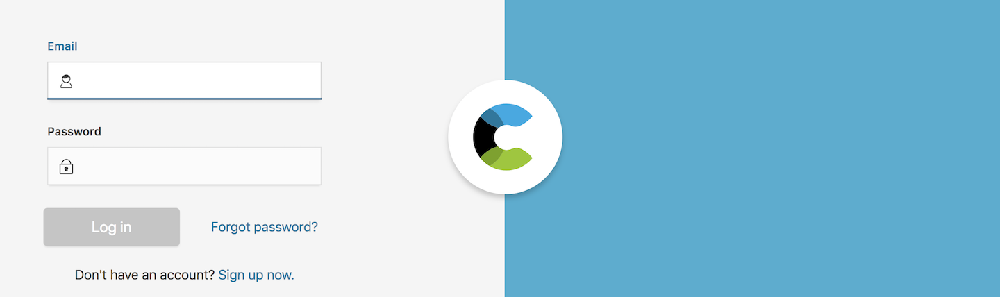 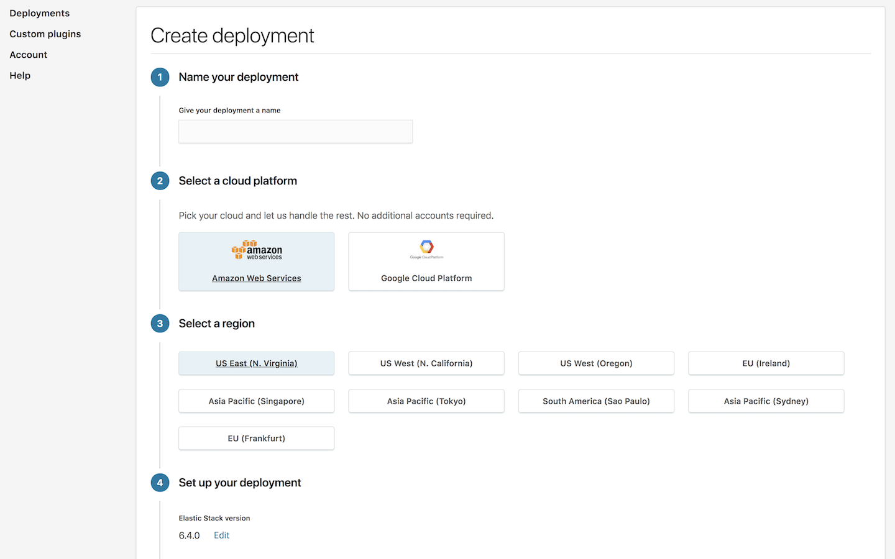 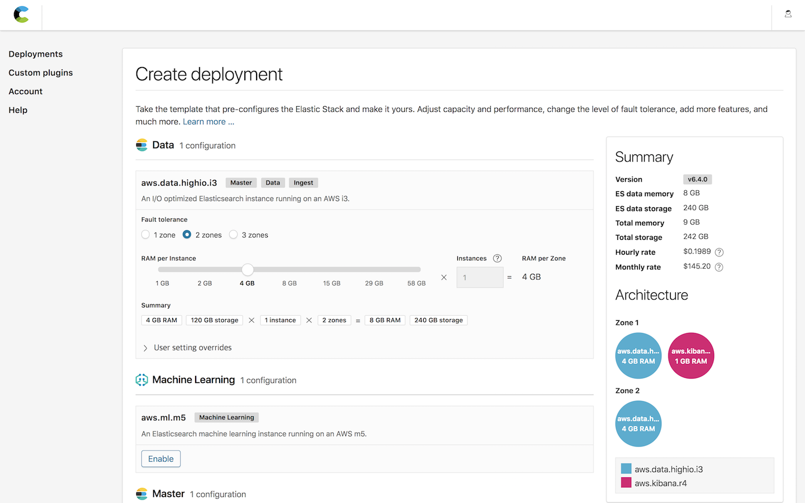 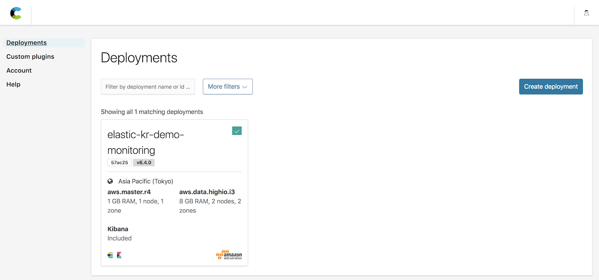 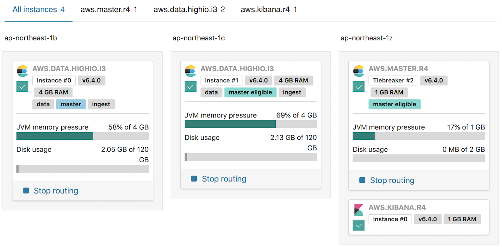
Elastict 사에서는 기존의 Gold / Platinum 기술지원 구독을 구매한 고객에게 무료로 Elastic Cloud에 모니터링 전용 클러스터를 제공하고 있습니다. 모니터링 클러스터를 사용하면 모니터링 데이터 저장 공간을 아낄 수 있고 문제가 생겼을 경우 Elastic의 기술지원 엔지니어들이 모니터링 클러스터에서 직접 문제의 확인이 가능하기 때문에 더욱 효과적인 기술지원이 가능한 장점이 있습니다.
클러스터를 만들고 나면 Elastic Cloud의 관리 화면에서 elasticsearch 및 kibana의 엔드포인트 주소를 확인할 수 있습니다.
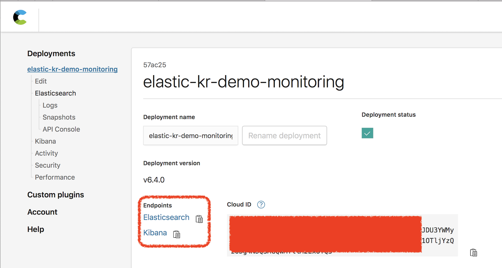
kibana 엔드포인트 주소로 접속하면 모니터링 클러스터의 kibana에 접속해서 사용이 가능합니다. 위의 <monitoring_cluster_host>에 elasticsearch 엔드포인트 주소를 입력하면 Elastic Cloud를 모니터링 클러스터로 사용이 가능합니다.
Gold 이상의 라이센스를 적용중이라면 Elasticsearch 노드들에 TLS 설정이 되어 있을것입니다. 이런 클러스터의 경우 Elastic Cloud의 클러스터에 접속하려면 SSL 인증키가 필요합니다. 이 인증키는 support 고객지원 시스템에서
How To Configure Your Elasticsearch 5.x/6.x Cluster to Use The Elastic Stack Monitoring Service
라는 제목으로 검색하면 나오는 아티클 페이지에서 다운로드가 가능합니다. 운영 클러스터의 elasticsearch.yml 파일에 아래와 같이 ssl.certificate_authorities 설정으로 인증키 파일을 추가합니다.
xpack.monitoring.exporters: |
위의 <monitoring_user>는 모니터링 클러스터에 만들어진 모니터링 데이터를 입력받는 user 입니다. 이 사용자는 remote_monitoring_agent role 을 가지고 있으면 됩니다. 아래는 모니터링 데이터를 입력받기 위한 monitoring 이라는 사용자 계정을 만든 예 입니다.
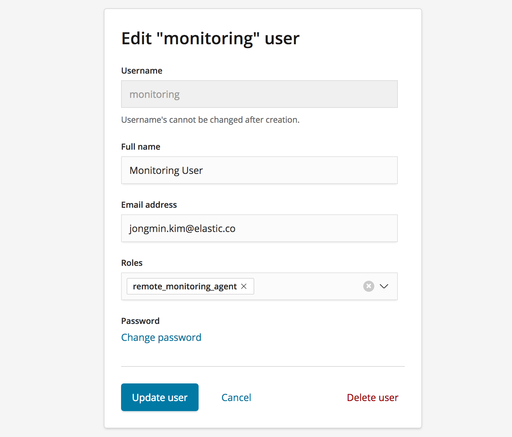
이제 Elastic Cloud 전용 모니터링 클러스터의 Kibana 화면에서 monitoring 메뉴를 확인하면 여러개의 클러스터 정보가 수집되고 있는 것을 확인할 수 있습니다.
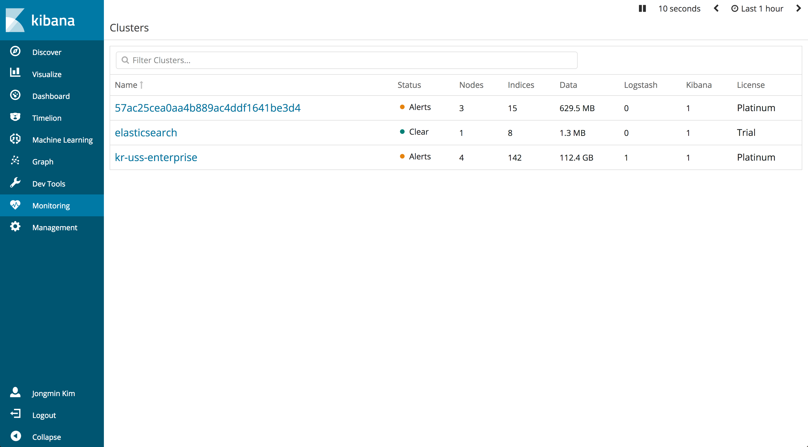
운영 클러스터의 Kibana, Logstash, Beats의 모니터링은 별도로 설정하지 않아도 알아서 모니터링 클러스터로 수집이 됩니다.

아직까지 Elasticsearch의 모니터링 기능을 사용하지 않고 계시다면 사용 해 보기를 적극 추천 해 드립니다. 클러스터 상태와 문제가 되는 여러 근본 원인들의 포인팅이 가능합니다. 🤓